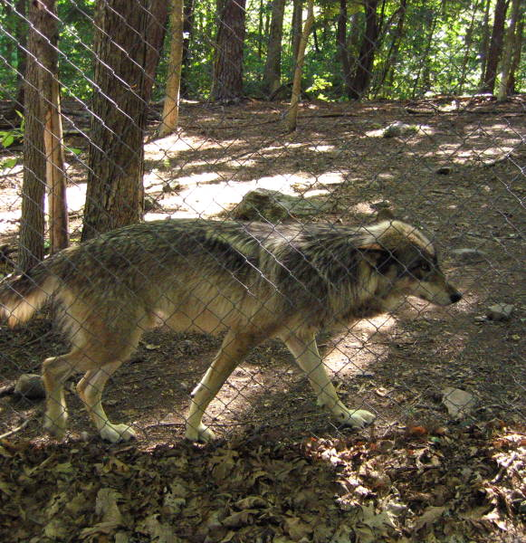
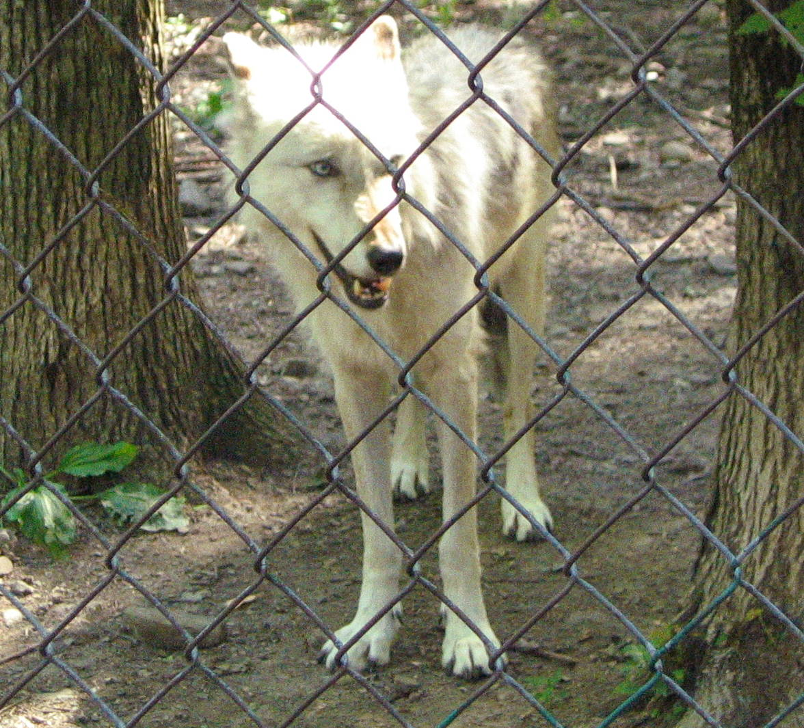

Lakota Wolf Preserve in the Summer
In the summer, wolves look like skinny creatures, because they lose much of their thick coat of winter fur. This arctic wolf looks a tad embarrassed.
This ninja-like timber wolf would have totally snuck up on me--if it wasn't for the fence.

Another timber wolf walking along the fence. These wolves apparently loved the fence during the summer. They brush up against it a lot, probably to get rid of fleas.
This old tundra wolf was busy howling all day. The others howled too, but this wolf had the creepiest howl. What they do is have someone in the tour group, usually a little boy, howl in the middle of the four packs of wolves. If it's an energetic enough howl, the wolves will join in. If not, the guy talking about the wolves will take out some sort of whistle that makes a howl-like sound, and that will usually work. They also respond to the local fire siren, so it's an interesting town to live in.

This wolf has mastered the hungry look.

These wolves are just chilling like a bunch of prima donnas looking good for the camera.
More wolves marching by, knowing the tourists pay for the frozen blocks of meat they're fed.
One wolf remains vigilant while the other starts to doze off.
And this one dozes off too. There's no predators in the wolf preserve. Perhaps a chipmunk will escape this wolf's wrath, however.
A red fox spies a treat expectantly.
Back